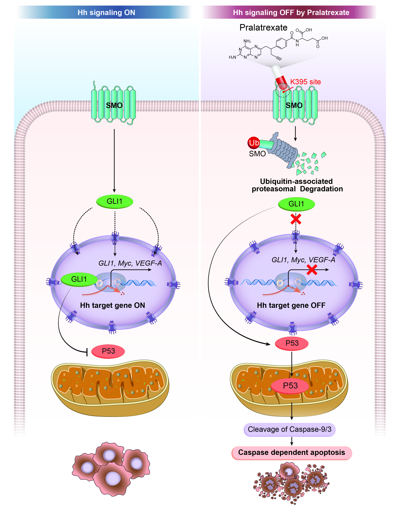

Cancer Biology Research Portfolio
Biomedical researcher focusing on elucidating complex cellular signaling pathways and discovering novel targeted therapeutics for human diseases through an integrated approach of molecular biology, drug repurposing, and in silico simulation.
Research Highlights
Investigating molecular mechanisms and validating therapeutic targets.
Identifying new therapeutic opportunities using approved drugs.
Cell-based assays and pathway validation.
TCGA analysis and molecular docking.
Scroll
안녕하세요. 분자생물학적 검증, 신약 재창출(Drug Repurposing), 그리고 In silico 시뮬레이션의 통합적 접근을 통해 난치성 질병의 세포 신호전달 경로를 규명하고, 새로운 표적 치료 전략을 탐구하는 의과학 연구자 윤혜미입니다.
저는 단순히 후보물질의 효능을 확인하는 것에 그치지 않고, 복잡한 분자 수준의 작용 기전을 정밀하게 밝혀내는 연구를 수행해 왔습니다. 이를 위해 세포 실험(In vitro)과 동물 모델(In vivo)을 통한 실험적 검증 및 컴퓨터 시뮬레이션(In silico)을 유기적으로 결합하여 데이터의 신뢰성과 재현성을 극대화하는 데 집중했습니다. 이러한 통합적 연구 역량을 바탕으로 위암 및 고형암 타깃의 파이프라인에서 국내외 학술지 논문 게재 및 글로벌 학회(AACR) 발표 성과를 도출했습니다.
실험실의 철저한 기초 연구 데이터가 실제 임상으로 연결되는 중개의학(Translational Medicine)의 가치를 믿습니다. 언제나 실험의 정확성을 최우선으로 삼으며, 혁신적인 치료 전략을 제시해 인류의 건강과 질병 극복에 기여하는 준비된 연구자가 되겠습니다.
고려대학교 대학원 의과학과 의생명과학 전공 / 혈액종양내과 오상철 교수님 연구실
✓ [Main Project] 위암 치료를 위한 Pralatrexate 신약 재창출 연구 주도 (공동 1저자, Under Review)
: In vitro, In vivo, In silico 통합 분석을 통해 SMO 단백질 분해 유도 및 p53 의존적 Apoptosis 메커니즘 규명
✓ [Collaborative Research] 대장암 및 위암 항암제 내성 극복 관련 공동 저자 논문 2편 게재
: 저널 Scientific Reports 및 Cancer Cell International 논문 참여, 메커니즘 검증(Methodology) 및 데이터 큐레이션(Data Curation) 역할 수행
✓ [Global Conference] 미국암연구학회(AACR) 참가 및 논문 초록/포스터 발표
: 주도 연구 발표(공동 1저자) 및 면역대식세포 분화 조절, 면역관문억제제 병용 효능 메커니즘 검증(Validation) 파트에 공동 저자로 기여
고려대학교 대학원 의과학과 혈액종양내과 오상철 교수님 연구실
✓ 대학원 입학 전 연구실 인턴십 활동을 통해 연구 참여 및 실험 기법 숙달
✓ 석사 학위 연구(Pralatrexate 프로젝트) 수행을 위한 기본적인 In vitro 기초 실험 프로토콜 세팅
연세대학교 대학원 의과학과 송재진 교수님 연구실
✓ '종양타겟팅과 바이러스 복제능 동반 향상시킨 암용해바이러스/중배엽줄기세포 복합체로 췌장암과 간암에서의 종양이질성 및 항암제 내성 극복 가능한 선도물질 도출' 과제에 학생연구원으로 참여
✓ 대학원 진학 전, 타 대학 연구실의 고유 연구 시스템 및 진보된 실험 환경을 경험
대구한의대학교 임상병리학과 분자생물학 연구실
✓ 다양한 기초 및 심화 실험 기법 습득 및 연구방법 학습
✓ 천연물 유래 폐암(TC-1 lungcarcinoma) 유효성 평가 연구를 진행
✓ 한국방사선학회 우수논문상 동상 수상 및 KSBMB 국제학회 초록/포스터 발표
Pralatrexate의 위암 치료제 신약 재창출 연구
기존 승인 약물인 Pralatrexate를 활용하여 위암 치료의 새로운 대안을 제시하는 연구를 주도했습니다. Pralatrexate가 Hedgehog 신호전달 경로의 중추 단백질인 SMO의 K395 잔기(residue)를 타깃하여 분해(degradation)를 유도하고, 이를 통해 Hedgehog 신호전달 경로를 효과적으로 억제함을 밝혔습니다.
결과적으로 Western Blot 및 Flow Cytometry 분석을 통해 SMO 억제 및 GLI1 사멸을 통한 p53 의존적인 세포 사멸(Apoptosis) 유도 메커니즘을 정밀하게 검증하여 공동 1저자로서 논문 작성을 완료했습니다.

Western Blot, Co-IP (Co-Immunoprecipitation)
q-PCR, Cloning, RNA/DNA Extraction
Cell Viability Assay, FACS (Flow Cytometry), Transfection
IF (Immunofluorescence), IHC (Immunohistochemistry)
In vivo 실험 수행 및 동물 모델 관리
Molecular Docking Simulation, TCGA Data Analysis
ImageJ, GraphPad Prism
임상병리사 면허 (보건복지부, 2023)
TOEIC 930 (2026.04)
Cell Death Discovery (Under Review)
📌 본 연구는 2025년 고려대학교 대학원에 제출된 석사 학위 논문을 기반으로 작성되었습니다.
[석사학위논문 전체보기 ↗]
Cancer Cell International, 26, 2026
Scientific Reports, 15, Article number: 38840, 2025
AACR Annual Meeting 2025, Abstract/Poster Presentation, Co-1st Author
AACR Annual Meeting 2025, Abstract/Poster Presentation, Co-Author
AACR Annual Meeting 2024, Abstract/Poster Presentation, Co-Author
KSBMB International Conference 2022, Abstract/Poster Presentation, 1st Author
2021년 온라인 추계종합학술대회 초록 발표
문의 사항이 있으시다면 아래 채널을 통해 편하게 연락주세요.
yunhm6155@gmail.com